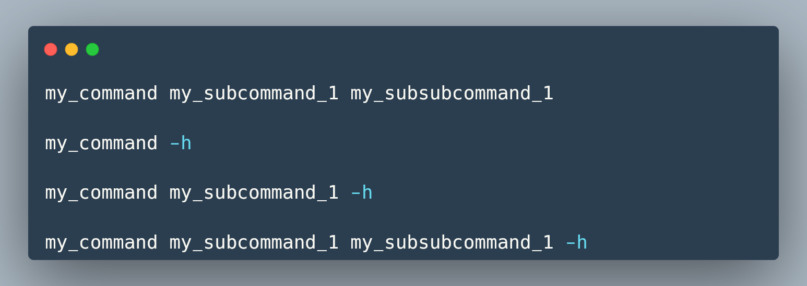
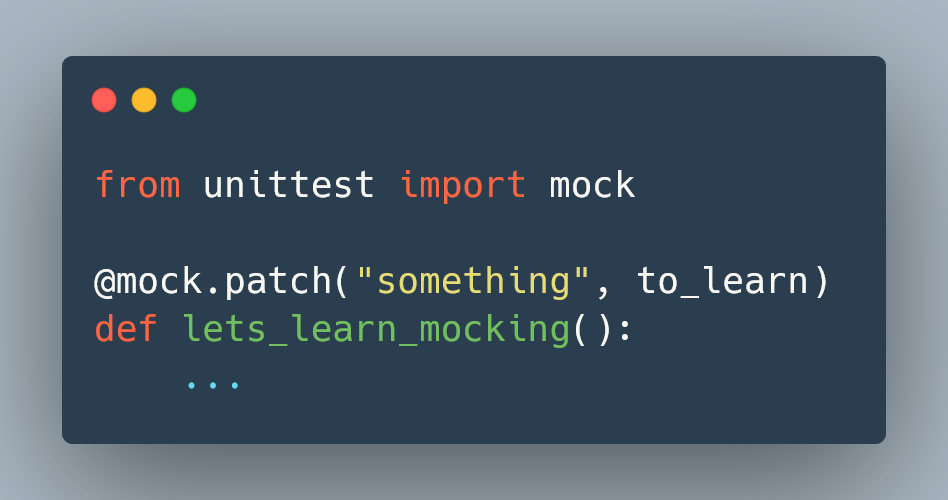

argparse

How to create a command that goes a b c
a b c
How to pickle an object that may have been wrapped

How to test against a Python script when you need to change how __main__ behaves
__main__
What to focus on during your code reviews